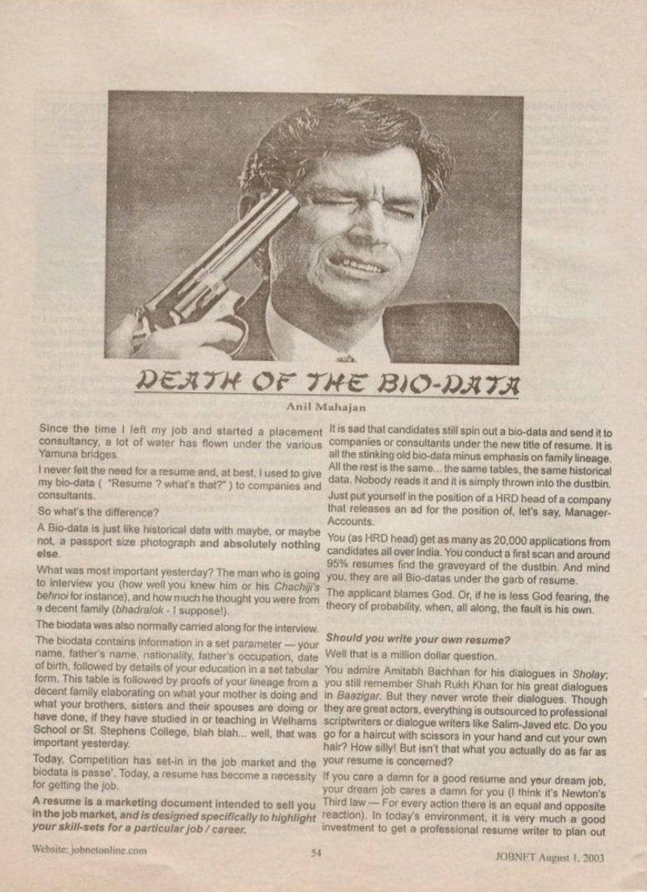
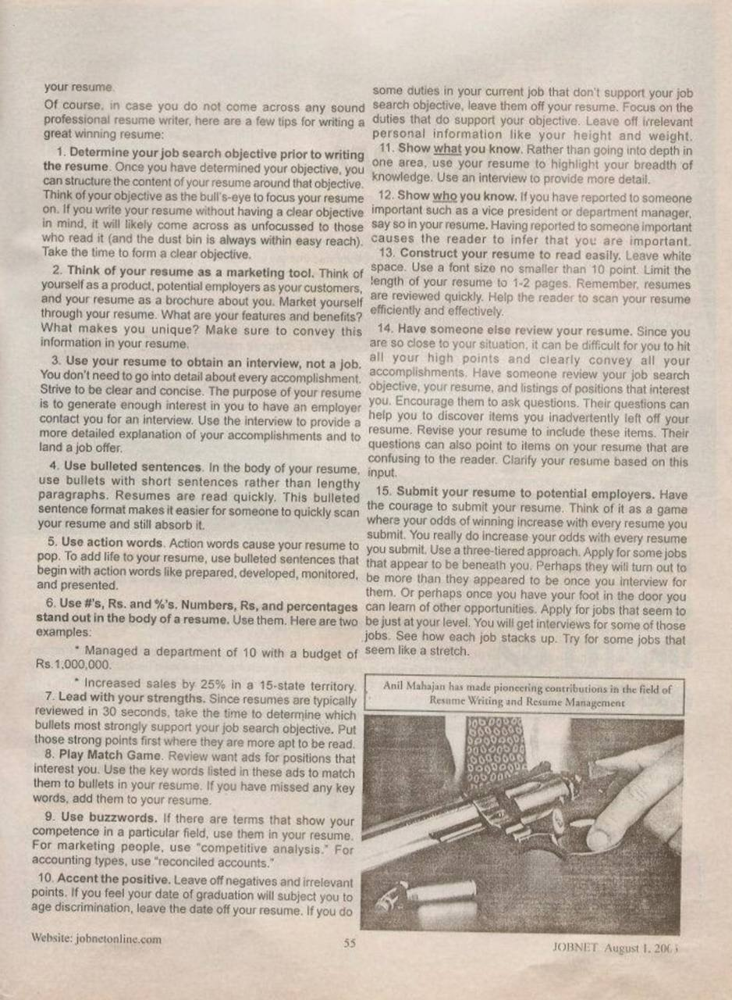

JOBNET Career Intelligence
When the Resume Began to Replace the Traditional Bio-data
About This Article
In this landmark article, Anil Mahajan questioned the traditional approach of treating a bio-data as merely a record of education and employment history.
The article explored how professionals need to present their experience, achievements and career value in a changing employment environment.
More than two decades later, these ideas have become even more relevant as organisations increasingly seek professionals who can demonstrate measurable business impact, leadership capability and strategic thinking.
Original Publication
Scanned pages from the original printed publication.

Page 54 — JOBNET August 2003

Page 55 — JOBNET August 2003
Article Transcript
Originally published in JOBNET
Since the time I left my job and started a placement consultancy, a lot of water has flown under the various Yamuna bridges. I never felt the need for a resume and, at best, I used to give my bio-data ( "Resume? what's that?" ) to companies and consultants.
So what's the difference? A Bio-data is just like historical data with maybe, or maybe not, a passport size photograph and absolutely nothing else.
What was most important yesterday? The man who is going to interview you (how well you knew him or his Chachiji's behnoi for instance), and how much he thought you were from a decent family (bhadralok — I suppose!). The biodata was also normally carried along for the interview.
The biodata contains information in a set parameter — your name, father's name, nationality, father's occupation, date of birth, followed by details of your education in a set tabular form. This table is followed by proofs of your lineage from a decent family elaborating on what your mother is doing and what your brothers, sisters and their spouses are doing or have done, if they have studied in or teaching in Welhams School or St. Stephens College, blah blah… well, that was important yesterday.
Today, Competition has set-in in the job market and the biodata is passé. Today, a resume has become a necessity for getting the job.
It is sad that candidates still spin out a bio-data and send it to companies or consultants under the new title of resume. It is all the stinking old bio-data minus emphasis on family lineage. All the rest is the same… the same tables, the same historical data. Nobody reads it and it is simply thrown into the dustbin.
Just put yourself in the position of a HRD head of a company that releases an ad for the position of, let's say, Manager-Accounts. You (as HRD head) get as many as 20,000 applications from candidates all over India. You conduct a first scan and around 95% resumes find the graveyard of the dustbin. And mind you, they are all Bio-datas under the garb of resume. The applicant blames God. Or, if he is less God fearing, the theory of probability, when, all along, the fault is his own.
Well that is a million dollar question. You admire Amitabh Bachhan for his dialogues in Sholay; you still remember Shah Rukh Khan for his great dialogues in Baazigar. But they never wrote their dialogues. Though they are great actors, everything is outsourced to professional scriptwriters or dialogue writers like Salim-Javed etc. Do you go for a haircut with scissors in your hand and cut your own hair? How silly! But isn't that what you actually do as far as your resume is concerned?
If you care a damn for a good resume and your dream job, your dream job cares a damn for you (I think it's Newton's Third law — For every action there is an equal and opposite reaction). In today's environment, it is very much a good investment to get a professional resume writer to plan out your resume.
Of course, in case you do not come across any sound professional resume writer, here are a few tips for writing a great winning resume:
Then & Now
The employment market has undergone a dramatic transformation since this article was first published. Traditional bio-data has largely disappeared, giving way to professional resumes, executive profiles, LinkedIn portfolios and AI-searchable digital identities.
Today's hiring decisions are influenced not only by qualifications but also by leadership capability, measurable achievements and business impact. Organisations increasingly evaluate candidates on their ability to create value, lead transformation and adapt to rapidly changing business environments.
The central message of Death of the Bio-data remains remarkably relevant: career documents should communicate contribution rather than merely record employment history.
How the Concept Has Evolved
Then — 2003
Today — 2026
Key Takeaways
Practical Advice
Whether you are an early-career professional or an experienced executive, your profile should answer these fundamental questions — increasingly important as recruiters and AI-driven platforms assess thousands of profiles every day.
Looking Ahead
While technologies continue to evolve, one principle remains unchanged:
That principle formed the foundation of this article in 2003 and continues to guide successful executive careers today.
About the Author
Continue Reading